地址预测：从失败记录继续试
实际输入：逐步观察、关闭预测、较慢的旧规则与较快的修订。具体参数只用于开发验证，不进入游戏提示。Viewport事件，不代表原生输入、前置旅程或真人理解验收。
精简前英文说明换行 · before-en-reason-wrap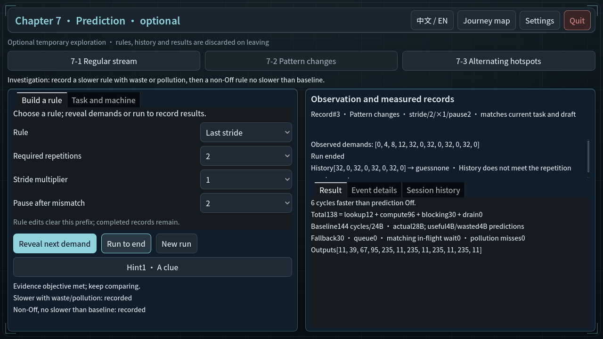
修复前 · before-zh_CN-prediction-off-baseline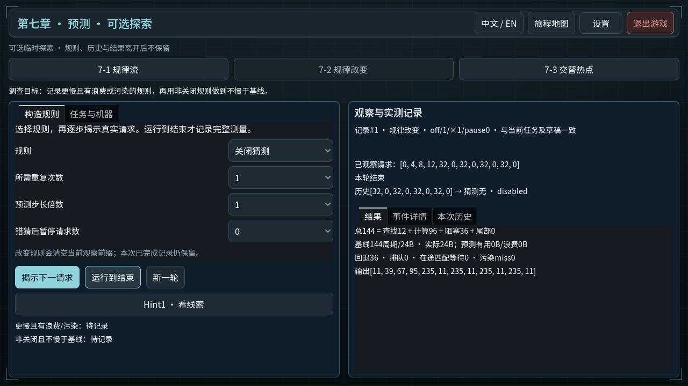
修复前 · before-zh_CN-prediction-slower-rule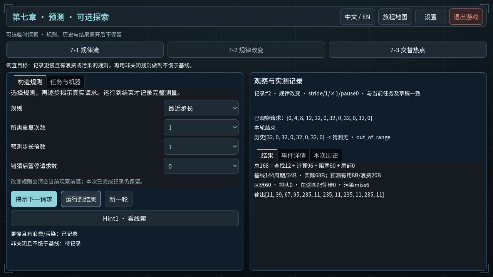
最终实际输入 · en-prediction-after-pattern-change最终实际输入 · en-prediction-before-pattern-change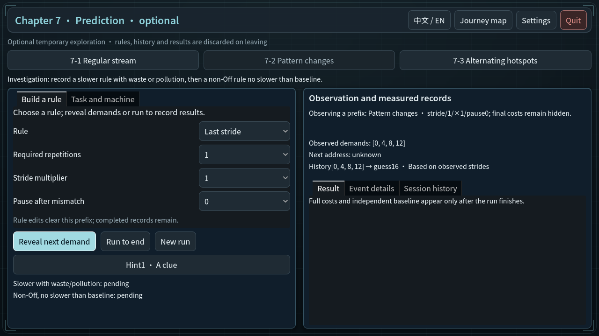
最终实际输入 · en-prediction-cost-definitions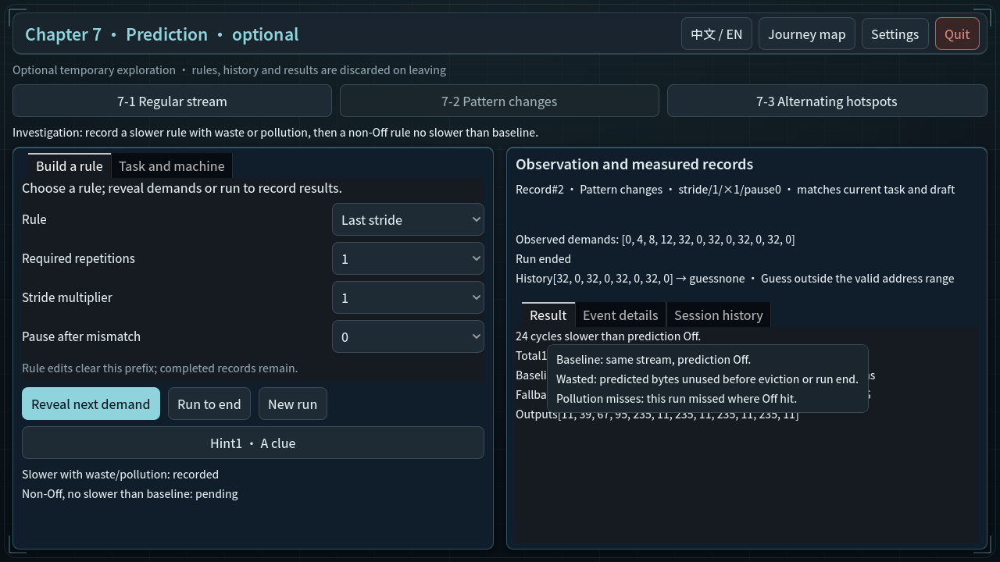
最终实际输入 · en-prediction-entry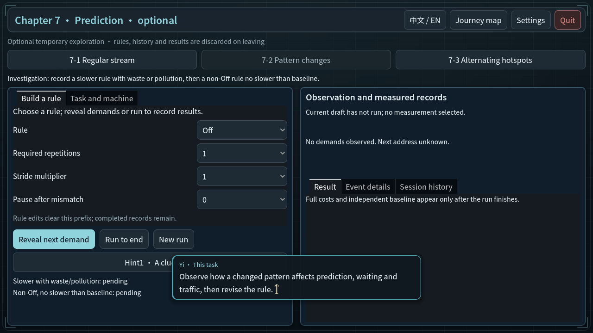
最终实际输入 · en-prediction-off-baseline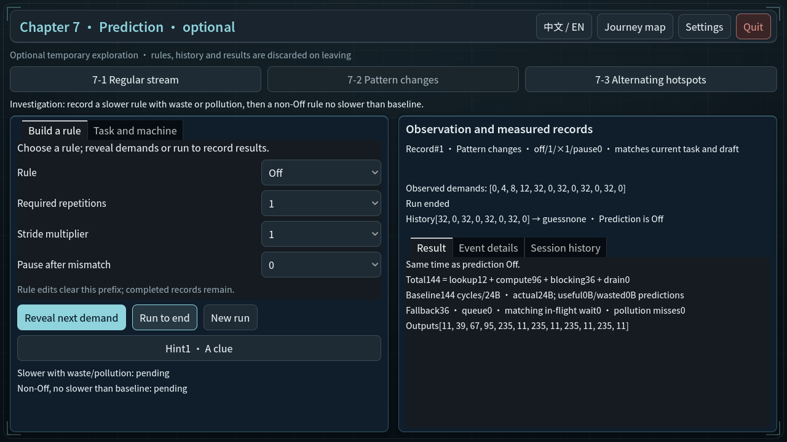
最终实际输入 · en-prediction-review-failure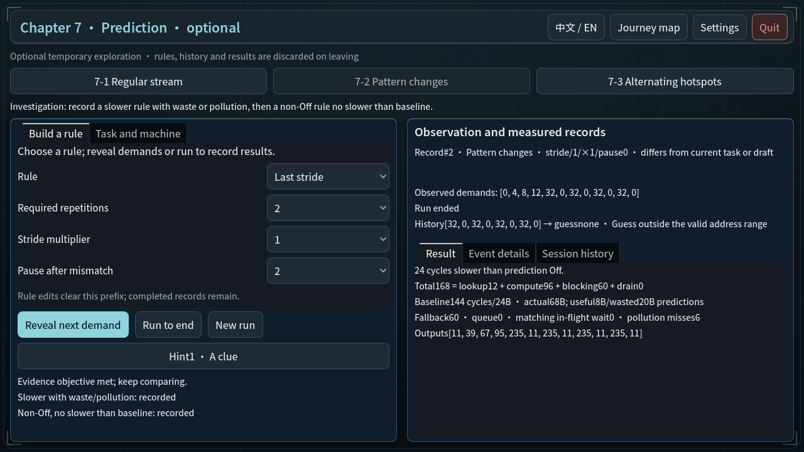
最终实际输入 · en-prediction-safe-revision最终实际输入 · en-prediction-slower-rule最终实际输入 · zh_CN-prediction-after-pattern-change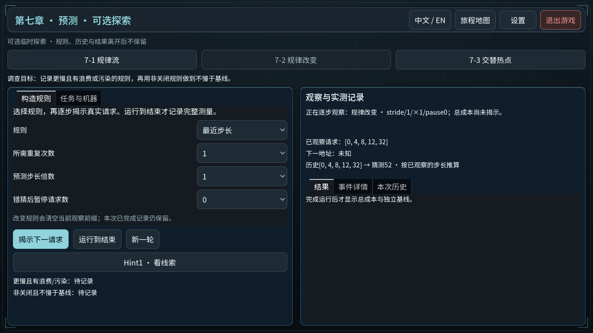
最终实际输入 · zh_CN-prediction-before-pattern-change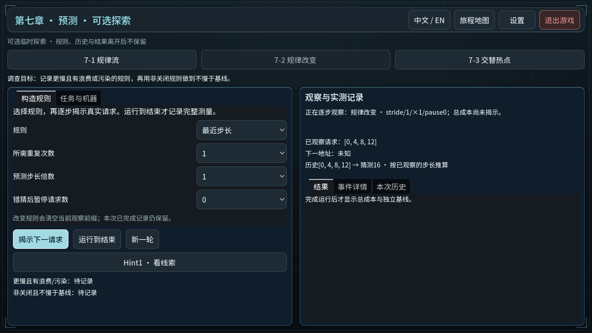
最终实际输入 · zh_CN-prediction-cost-definitions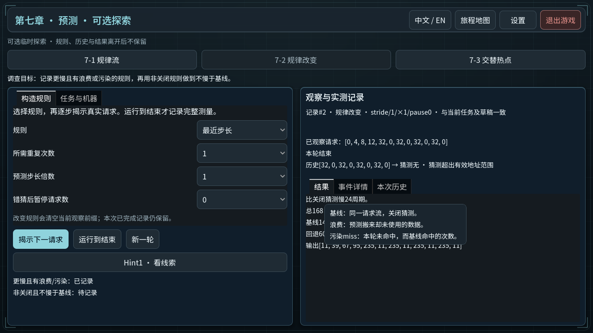
最终实际输入 · zh_CN-prediction-entry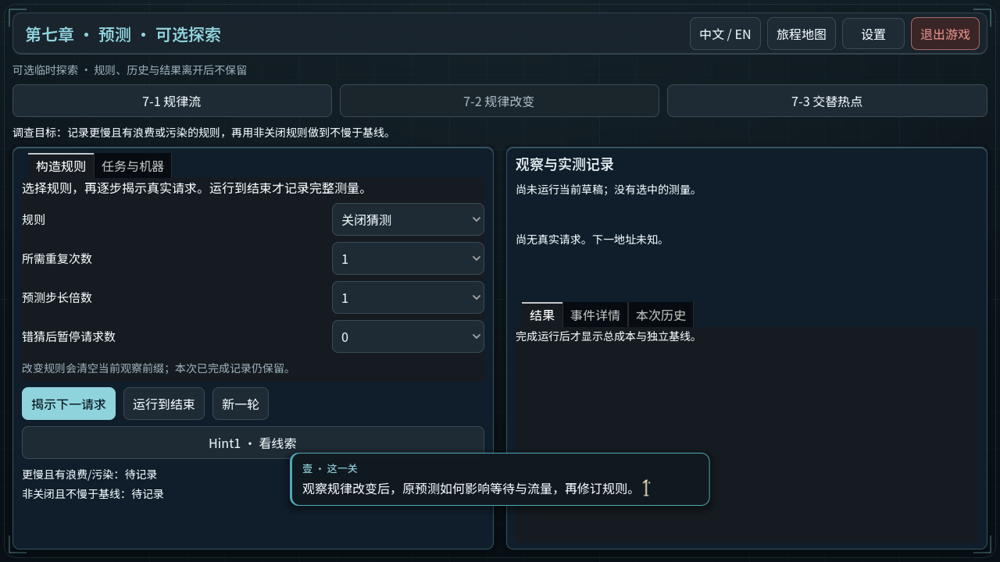
最终实际输入 · zh_CN-prediction-off-baseline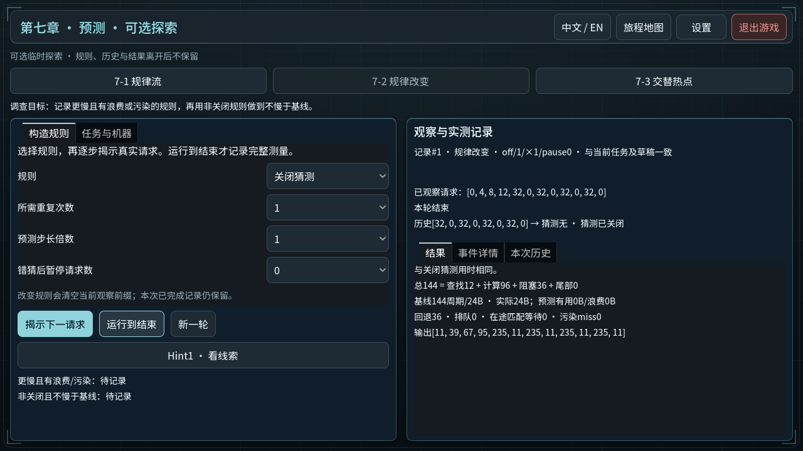
最终实际输入 · zh_CN-prediction-review-failure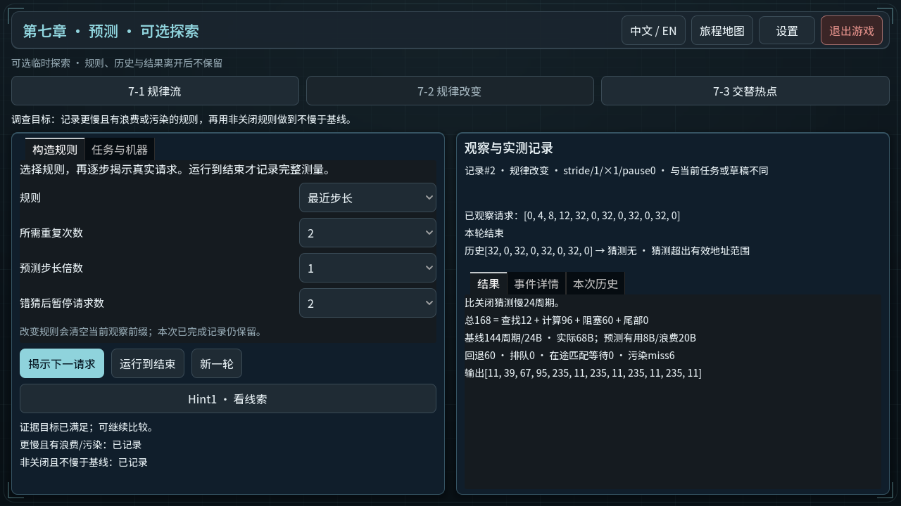
最终实际输入 · zh_CN-prediction-safe-revision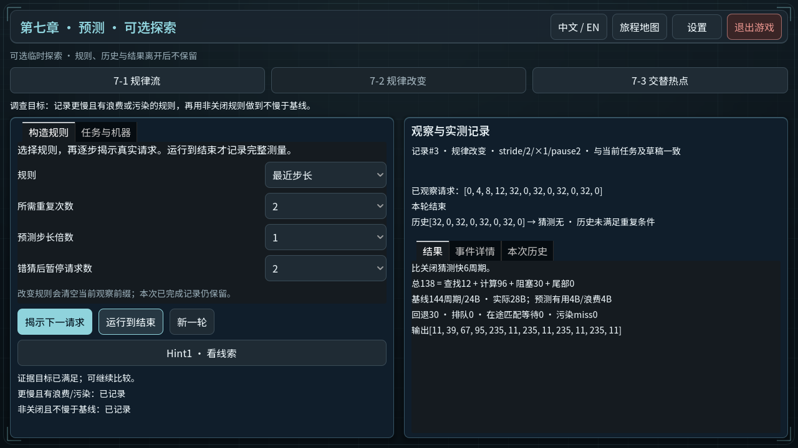
最终实际输入 · zh_CN-prediction-slower-rule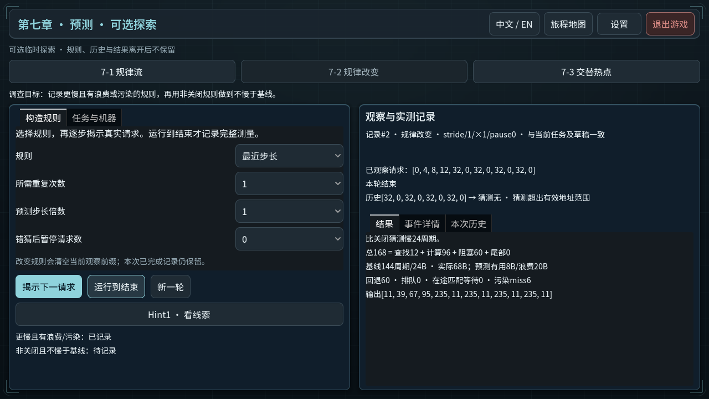